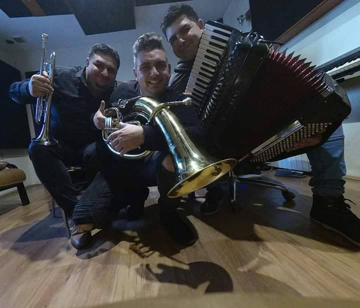
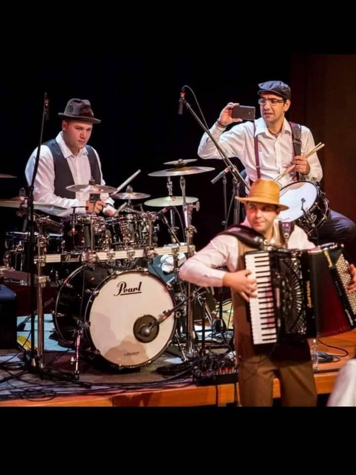

Mi smo profesionalni trubački orkestar Peka-Orchestra
Trubači - nastupi Beograd,Novi Sad,inostranstvo ...
Mi smo tamo gde nas vi pozovete.
Peka-Orchestra je sastavljen 2019-te godine i broji 9 članova.Mi smo orkestar koji se prevenstveno bavi sviranjem koncerata širom Evrope i to uglavnom sviranjem u Arenama sa najpoznatijim svetskim i evropskim zvezdama,sviranjem svadbi,svih vrsta proslava po želji.Gostovali smo na svim poznatim scenama i lokalitetima i lokalnim televizijama i radijima.Orkestar svira svaku vrstu muzike i imamo bogat repertoar što domaćih tako i stranih pesama.
Takodje,svirali smo i u Americi,Kanadi i Meksiku i skoro svim zemljama u Evropi.
Pogledajte našu galeriju slika sa naših nastupa.
Niš,Kragujevac,Subotica,Leskovac,Kraljevo,Kruševac ...
Volimo celu našu prelepu Srbiju i uvek smo lepo dočekani gde god nastupamo,naš narod je veoma gostoljubiv,druženja su fenomenalna,sklapanja novih prijateljstava kada gostujemo bilo gde u Srbiji obogaćuju naše živote,neka od tih prijateljstava ostala su zauvek.Srbija je prelepa zemlja sa divnim gostoljubivim i srdačnim narodom kojem jednostavno nemožete odoleti,nekako,prirastu vam za srce.Niš,Kragujevac,Subotica,Leskovac,Kraljevo,Kruševac i druga mesta su prelepi i prava je radost i uživanje kada nas ugoste.
Istorijat trube i trubačke muzike u Srbiji

Truba je u Srbiju stigla iz Prvog svetskog rata, u vojničkom koferu, sa ratnim uspomenama. Primila se kod naših ljudi, prepoznala u narodnoj melodiji i postala omiljen instrument u našim selima. Između dva svetska rata, u brdima zapadne Srbije, nije bilo sela bez trubača. Sviralo se uz gasarice i karbituše lampe, po vašarima, svadbama, proslavama, mobama, komišanjima... Sazivalo se i dozivalo trubom, dočekivalo i ispraćalo.
Ako se ne bi čula truba nije se ni računalo da se nešto dogodilo. Na toj velikoj i neuhvatljivoj pozornici između Drine i Ibra, od Povlena i Maljena pa sve do Nove Varoši i Prijepolja, planula je kao požar čudesna muzička predstava. Guča, koja će kasnije postati koncertna dvorana omeđena brdima i nebom, za hiljade truba i stotine hiljada njenih poklonika, tu najznačajniju muzičku tradiciju u ovim krajevima izvešće na svetlost pozornice. Počeće da je izvodi iz okvira lokalnog folklora zapadne, a onda i južne Srbije.
Guča je imala sreću da već na prvim saborima zasviraju trojica vrsnih majstora trubača: Radovan Babić, Bakija Bakić i Raka Kostić. Oni su tada na najlepši način promovisali i utemeljili tri stila, tri škole sviranja na trubi, tri različita melosa koji su nosili pečat i dušu onih krajeva u kojima se truba negovala i u kojima se i danas neguje: zlatiborsko-dragačevski, vranjski i vlaški. Na zvuku njihovih truba odnegovani su mnogi. Sve ono što je i danas živo u srpskoj trubi izniklo je, na ovaj ili onaj način, iz orkestara koji su u jedno duže vreme predvodili ovi majstori trube. Uz njih i za njima došli su Junuz Ismailović, Milivoje Stanimirović, Milan Nikolić Donja, Boško Ostojić, Fejat Sejdić, Ekrem Mamutović (Milan Mladenović), Milovan Babić, Dragan Veličković, a onda i Svetozar Lazović, Gongo, Mićo Petrović, Slobodan Salijević, Boban Marković...
Širila se i obnavljala publika, podmlađivala se truba i stalno obnavljala. Kad god se strahovalo da njen zvuk zamire, naročito u Dragačevu i na Zlatiboru, dolazili su naslednici, sinovi i unuci. Neki su svirali bolje od očeva i dedova. Dug je spisak onih mladića koji danas majstorski muziciraju na ovom instrumentu. Do sada majstori koji su svirali i komponovali na sluh, muzički se opismenjavaju, ulaze u tajne muzičkih aranžmana. Vremena se menjaju.
Hvala na poseti